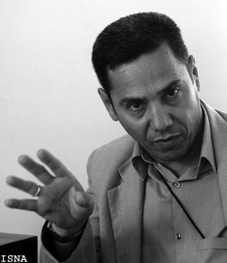

پذيرش > سایت نوشته ها > قوه قضاییه از برخوردهای جریان تندرو جلوگیری کند
 گفتگو با عبدالفتاح سلطانی گفتگو با عبدالفتاح سلطانی

 قوه قضاییه از برخوردهای جریان تندرو جلوگیری کند قوه قضاییه از برخوردهای جریان تندرو جلوگیری کند
9 مهر 1387 - رادیو فردا / میر علی حسینی - نسخه قابل چاپ
در پی بازداشت های اخير در ميان اقليت های قومی و مذهبی در ايران، کانون مدافعان حقوق بشر با انتشار بيانيه ای، ضمن ابراز نگرانی شديد، بازداشت های اخير را محکوم کرد.
اين نهاد غير دولتی مدافع حقوق بشر در ايران در اين بيانيه، بازداشت های اخير ار وسيله ای برای ايجاد رعب و وحشت در ميان اقليت های قومی و مذهبی و دانشجويان و معلمان دانست.
کانون مدافعان حقوق بشرهمچنين اين بازداشت ها را به عنوان موارد نقض حقوق بشر و تضييع حقوق بنيادين ملت ايران ارزيابی کرد.
اين نهاد حقوق بشری عملکرد برخی از نهادهای تندروی قدرت را عاملی برای از هم گسيختگی وحدت ملی دانست که در نهايت، امنيت ملی ايران را به مخاطره می اندازد.
بر اساس بيانيه کانون مدافعان حقوق بشر، موج گرانی و تورم سرسام آور، مردم را به ستوه آورده و در برابر روند فزاينده فقر، فحشا و اعتياد، خانواده های بسياری در معرض تباهی قرار گرفته اند.
در چنين شرايطی، به نوشته اين نهاد مدافع حقوق بشر، بايد با انديشه ای عميق، موجبات وحدت و تفاهم هر چه بيشتر آحاد ملت را فراهم کرد و ريشه کينه و دشمنی را در ميان مردم خشکاند.
عبدالفتاح سلطانی، حقوقدان و يکی از اعضای کانون مدافعان حقوق بشر، در گفت و گو با « راديو فردا» می گويد: اعتقاد عده ای که منتصب به قدرت هستند٬ اين است که بايد با ايجاد رعب و وحشت از هر نوع حرکت های مردمی٬ حتی مدنی جلوگيری کرد.
آقای سلطانی! کانون مدافعان حقوق بشر بنا به چه دلايلی از بازداشت های اخير نگران است؟
متأسفانه٬ جريان تندرويی٬ که در مملکت ما، قدرت، به خصوص قوه مجريه را قبضه کرده است، اخيرا برخوردهای بسيار تندی با اقليت های دينی و مذهبی دارد.
در سه سال اخير، بازداشت هايی توسط اين جريان تندرو انجام گرفته، که مخالف قانون اساسی و قوانين عادی٬ مخالف اعلاميه جهانی حقوق بشر٬ ميثاق بين المللی حقوق مدنی و سياسی و حتی مخالف اصول و قواعد شرعی است٬ که حضرات می گويند به آن پايبند هستند.
اين جريان تندرو٬ در واقع٬ سير قهقرايی طی می کند٬ چون اين باورهای تنگ نظرانه٬ نشات گرفته از دگماتيسم و نگرش واپس گرايانه است. اين در حالی است که هم در آموزه های اسلام و هم در قواعد حقوق بشر٬ همه اديان و اقليت ها حق دارند از آزادی بيان و عقيده برخوردار باشند.
کانون مدافعان حقوق بشر به عنوان يک نهاد حقوق بشری هميشه در اين نوع موارد موضع می گيرد و اين قبيل بازداشت ها و تنگ نظری ها را محکوم می کند.
آقای سلطانی! گذشته از محکوم کردن٬ شما در اين بيانيه اظهار نگرانی هم کرده ايد. آيا به واسطه اينکه به نظر شما٬ فشارها و سرکوب ها بر اقليت های قومی و مذهبی بيشتر از سابق شده اند؟ يا اينکه صرفا٬ همانطور که اشاره کرديد٬ فقط با هدف ايجاد رعب و وحشت انجام می گيرد؟
از دو منظر می توان به آن پرداخت. يکی اين که٬ اکنون آغاز سال تحصيلی است٬ بازداشت دانشجويان و فعالين سياسی٬ در اين راستا می تواند تعبير شود که ممکن است آنها به يک سری اقدامات و بعضی از نهادهای منتصب به قدرت٬ معترض باشند.
يکی از علل اين است که با ايجاد رعب و وحشت٬ مقداری از حرکت های دانشجويی و معلمين جلوگيری کنند. اين يکی از دلايل می تواند باشد. ولی از همه مهمتر٬ بر می گردد به همان تنگ نظری هايی که متأسفانه٬ عده ای که منتصب به قدرت هستند٬ دارند و اعتقاد آنها اين است که بايد با ايجاد رعب و وحشت از هر نوع حرکت های مردمی٬ حتی مدنی، جلوگيری کرد.
ما معتقد هستيم که اگر اين جريانات ادامه پيدا کند٬ وحدت ملی از هم گسيخته می شود. در واقع٬ به اين ترتيب، زمينه بروز اعتراضات و باورها و حرکت های تند ايجاد می شود و هيچ ايرانی وطن پرستی دوست ندارد که خدای نکرده٬ وحدت ملی از هم گسيخته شود و زمينه ايجاد حرکت های تند فراهم شود.
ما به همين دليل به همه مسئولين هشدار می دهيم که نگذارند آن جريان تندرو٬ افسار گسيخته شود و به هرکاری که می خواهد دست بزند و زمينه را برای بلوا و آشوب ايجاد کند.
شما با انتشار اين بيانيه در پيوند با بازداشت های اخير در آذربايجان و تعطيل شدن روزنامه ها چه انتظاری داريد و در پی آن چه اقدامی خواهيد کرد؟
هر تشکل حقوق بشری٬ قدرت اجرايی ندارد٬ بلکه فقط می تواند هشدار دهد.
اين اقدام خطاب به مسئولين امر است که متوجه شوند دارند چه می کنند٬ متوجه عواقب کار خود باشند و سعی کنند که با ديد خردمندانه به قضايا نگاه کنند و به مشکلات و مطالبات به حق مردم را٬ اعم از اقتصادی، اجتماعی و سياسی٬ حداقل بطور نسبی٬ پاسخ مثبت دهند.
مسئولين بايد بدانند که در اين شرايط حساس٬ چه وظيفه ای دارند و از برخوردهای احساسی و غير مسئولانه با مردم اجتناب کنند. اميدواريم که مسئولين قوه قضاييه از تند روی های جناح تندرويی که اهرم قدرت را به دست گرفته است، به طور جدی جلوگيری کند تا مشکلی برای جامعه پيش نيآيد.
در عين حال، اين اقدام کانون، به منزله اطلاع رسانی به مردم است.
آيا اميدی به آزادی کسانی که به تازگی بازداشت شده اند٬ داريد؟
ما تلاش خود را می کنيم و فکر می کنم بسياری از اين بازداشت ها مقطعی است. به نظر من٬ بازداشت شدگان ظرف مدت کوتاهی آزاد می شوند و اين مشکلات به تدريج حل می شود.
رادیو فردا
ارسال به
بالاترین
،
توییتر
،
فریندفید
،
فیسبوک
در همين بخش :
 یک خبر تلخ؟ یک قانونشکنی؟ یک تصمیم بخشنامهای جدید؟ یک خبر تلخ؟ یک قانونشکنی؟ یک تصمیم بخشنامهای جدید؟
چرا بایست به سکسوالیته پرداخت؟ / نفیسه آزاد
آزارجنسی خانگی؛ «قربانی» نه، «نجات یافته»
زنان، بزرگترین بازندگان بهار عرب
سانسور از دیدگاه جنسیتی/الهه امانی
ديگر بخش ها :
طرح یک میلیون امضا
|
مقالات
|
سایت نوشته ها
|
اخبار
|
گزارش كمپين
|
گفت و گو
|
علیه سکوت
|
كوچه به كوچه
|
نامه های شما
|
گزارش ویژه
|
گفتگو با اعضا
|
ویژه سالگرد کمپین
|
تصویر برابری
|
دل آرام علی
|
تریبون
|
مقالات
|
تاریخ شفاهی
|
خارج از چارچوب
|
کتابخانه
|
درباره کمپین
|
کمپین در شهرها
|
کمپین در بند
|
صدای تغییر
|
ویژه 22 خرداد
|
لایحه حمایت از خانواده
|
گالری
|
عشا مومنی
|
امیر یعقوبعلی
|
خدیجه مقدم
|
راحله عسگری زاده و نسیم خسروی
|
پروین اردلان،جلوه جواهری، مریم حسین خواه، ناهید کشاورز
|
زینب پیغمبرزاده
|
سعیده امین، سارا ایمانیان، محبوبه حسین زاده، ناهید کشاورز و همایون نامی
|
احترام شادفر
|
نسیم سرابندی زاده،فاطمه دهدشتی
|
وبلاگ مهمان
|
پرونده خرم آباد
|
دستگیری ها
|
مریم مالک
|
پرستو اللهیاری
|
مهرنوش اعتمادی
|
سمیه رشیدی
|
Other Languages
|
همراهان
|
«فراخوان کمپین ده روز با بهاره هدایت»
| English
|